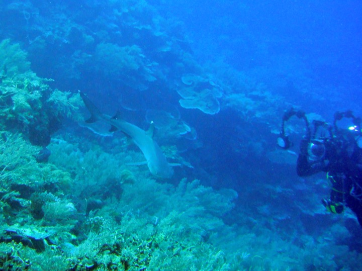
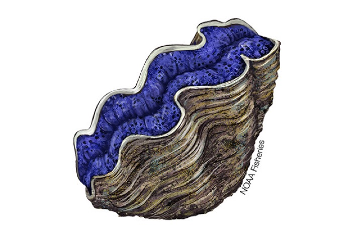
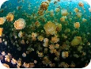
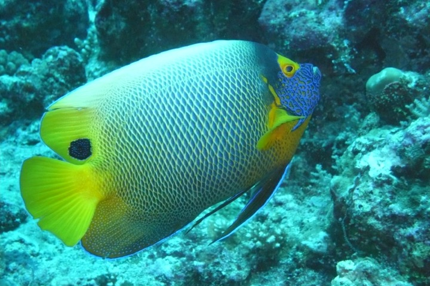
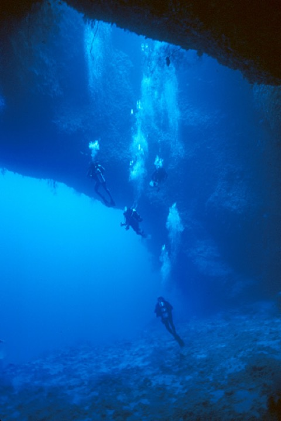
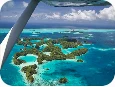
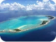

第 1 天抵達科羅
- 上午
- 桃園出發，依班機時間調整
- 下午
- 抵達 ROR，搭飯店接駁前往科羅，入住後在市區補水、換少量美元現金
- 晚上
- 科羅市區晚餐，確認隔日接送時間與浮潛裝備。晚到就直接入住
洛克群島浮潛、長沙灘、水母湖、本島瀑布與 SUP 小藍洞。
先確認去回程相隔四晚，再訂房與船團。 查詢中華航空航線
在地消息與聊天話題行程時間皆為帛琉當地時間。
出海時間為規劃用。長沙灘能否登陸取決於潮汐。獨木舟可詢問是否有半日行程、最低成團人數及救生衣尺寸。館方營業日與售票時間建議出發前確認。 洛克群島旅客指南 · 獨木舟業者 · Etpison Museum · Belau National Museum

2026 年 11 月的在地消息，附拜訪時可用的聊天開場。
按帛琉政府會計年度（FY）統計。2021 年降至 3,400 人次，2025 年回升至 65,558 人次。
共 63,948 人次。台灣在單一客源市場中排名第二，「其他地區」為多個市場加總。
依提供的資料整理，供出差前討論。


在水面觀察礁鯊。選擇不餵食或引誘野生動物的行程，與鯊魚保持距離。 Google Maps

在淺水觀察大型硨磲貝與外套膜的色彩，手腳與蛙鞋都保持距離。 Google Maps

珊瑚礁邊緣陡降入深水，沿礁可觀察熱帶魚，偶爾也會遇到海龜。請導遊依流況評估浮潛區。 Google Maps

乳白藍綠的水色來自細白泥。依導遊及現場規定活動。 Google Maps

先辦水母湖許可，再確認當天是否封閉。晴天時黃金水母常上午往東、午後往西，分布隨日照而變，由導遊帶往適合觀察的位置。依現場規定穿蛙鞋，放慢踢水、保持距離，避免觸碰水母。 Google Maps

著名的外礁角，常見強流與成群魚類。 Google Maps

礁盤開口通向水下洞室，以光束和地形著名。洞室要由合資格的水肺導遊評估。 Google Maps
以珊瑚礁壁聞名，入水點依海況與活動類型決定。 Google Maps
一般水肺團出海前會查驗 Open Water 或同等證照。未持證就安排浮潛；想試水肺可另向教練詢問體驗潛水。藍角、藍洞和大斷層是否適合，請由業者依證照、經驗和當天海況判斷。
Open Water 通常約 3–4 天；USD 550 只作初步抓預算，有些課程更高，應請業者報價。完成訓練與評核後才核發證照。另問船潛與許可費、氣瓶、配重、午餐、裝備和 Nitrox 是否包含。






先請船團確認能否改到第 3 或第 4 天。
以上為每位成人的預算。本行程以含水母湖的 USD 100 許可估算。含水母湖的許可也涵蓋其他指定觀光區。訂團前請確認費用、效期、第 4 天能否沿用，以及團費是否已包含許可。
科羅州政府許可說明預訂明確包含水母湖的第 2 天船團，並辦理含水母湖的許可。付款前及出發前都請船團確認是否封閉。水母監測可用來看族群狀況；入湖開放依科羅州與船團現場公告。若暫停入湖，優先請業者協助改到第 3 或第 4 天。 湖況與水母監測
浮潛時穿救生衣、跟隨導遊，依能力選擇水域。穿防磨衣遮陽，避免踩踏珊瑚。
瀑布步道穿止滑鞋，水位上升或步道封閉時就折返。
帛琉觀光局保育規範試算匯率 US$1 ≈ NT$32
USD 100（約 NT$3,200）。購票時確認票價是否已包含。 帛琉移民機關
持台灣護照赴帛琉旅遊可免簽停留最多 90 天。請備妥效期至少 6 個月的護照與回程機票。若赴帛琉工作，先向官方確認所需許可。
仍須填電子入境卡。 請在預計抵達前 72 小時內、登機報到前完成 Palau Entry Form。把 QR Code 截圖或列印，報到及抵達時出示。
填寫官方入境卡 台灣外交部入境資訊帛琉的網路整體普通偏弱。觀光區普遍可刷信用卡，但仍要準備小額美元現金。
帛琉禁止攜入或使用含違禁成分的防曬。依官方清單核對成分，可選氧化鋅或二氧化鈦為主要防曬成分的合規產品，多帶一罐備用。 帛琉防曬規範
入境時在護照上簽署承諾，尊重帛琉的生態、文化與社區。 承諾內容
當地緊急電話 911。Belau National Hospital 位於科羅的 Meyuns，急診 +680 488 2558。嚴重傷病可能需要轉送。 政府電話簿 · 醫院地圖
PNCC 是帛琉主要電信業者之一。科羅和 Airai 的行動網路相對較好，離島和船上訊號不穩。辦公前先詢問飯店 Wi‑Fi；PNCC 科羅門市可辦預付 eSIM，科羅與 Airai 門市有實體 SIM。出海前下載地圖、入境 QR Code 和訂位資料。 PNCC 旅客方案與門市
帛琉是美規 Type A／B、120 V／60 Hz。相同插型且標示 100–240 V 的台灣手機、筆電充電器通常可直接使用；只標 110 V 的電器先確認相容性。 帛琉領事館資料
飯店和多數觀光商家可刷主要信用卡。小店可能只收現金，請備小額美元，並先問船團是否可刷卡及有無手續費。 加拿大旅遊資訊
可向 Splash 詢問水底相機租借，先確認日期、庫存、防水殼、記憶卡、押金及影像交付方式。 Splash 租借服務
洛克群島、Nikko Bay 與水母湖船團詢問 info@paddlingpalau.net · 官方聯絡資訊
空中環島，請確認集合點 WhatsApp +680 775 2747 · 官方聯絡資訊
水肺、體驗潛水、浮潛與水底相機租借詢問 +680 488 2600 ext. 485 · 官方聯絡資訊
館藏、開放時間與團體參觀 +680 488 6730 · 官方聯絡資訊
2026 年 11 月，這條直飛航線由中華航空營運，每週約 4 班，飛行時間約 3 小時 45–55 分鐘。
| 班號／飛行日 | 桃園 TPE 出發 | 帛琉 ROR 抵達 |
|---|---|---|
| CI030 週一、週四 | ||
| CI028 週三、週六 |
出發與抵達皆為當地時間。帛琉比台灣快 1 小時，訂票前請以航空公司顯示的日期與班表為準。
查詢中華航空實際班表乾季初期 · 旅遊旺季
乾季初期，仍可能有陣雨，海況會變動。
全部打包完成。


.jpg){kind=link}